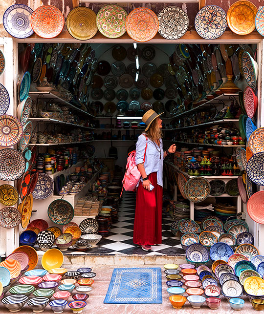

À propos

Bienvenue sur notre site dédié à la valorisation des produits artisanaux de la région Souss-Massa, un véritable
trésor de savoir-faire marocain. Située au sud-ouest du Maroc, cette région est renommée pour la richesse et la
diversité de ses métiers d’art, transmis de génération en génération.
Nous vous proposons une sélection unique de produits artisanaux, conçus avec soin et passion par des artisans locaux. Que ce soit des textiles aux motifs traditionnels, des céramiques aux formes élégantes, des articles en cuir façonnés à la main ou des bijoux aux designs authentiques, chaque création incarne l’histoire et l’identité culturelle de Souss-Massa.
Notre mission est de faire découvrir ces trésors au-delà des frontières et de contribuer à la préservation de ce patrimoine vivant. En achetant sur notre site, vous soutenez directement les artisans locaux et participez à la valorisation de ces savoir-faire ancestraux. Plongez dans un univers où chaque pièce raconte une histoire, celle d’une culture riche et d’un artisanat d'exception.